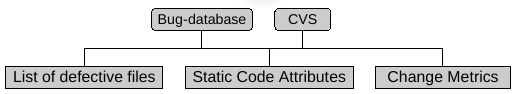

Chapter 5 Metrics in Software Enginering Prediction
There are many types of metrics that can be easily collected from source code or software configuration management systems.
Most work have focused on static metrics from code but recently other metrics
 (Source: Moser et al)
Change Metrics describe how a file changed in the past, e.g., REVISIONS, REFACTORINGS, BUGFIXES, LOC_ADDED, etc.
5.1 Complexity Metrics
These metrics have been used for quality assurance during:
Development to obtain quality measures, code reviews etc.
Testing to focus and prioritize testing effort, improve efficiency etc.
Maintenance as indicators of comprehensibility of the modules etc.
Generally, the developers or maintainers use rules of thumb or threshold values to keep modules, methods etc. within certain range. For example, if the cyclomatic complexity (\(v(g)\)) of a module is between 1 and 10, it is considered to have a very low risk of being defective; however, any value greater than 50 is considered to have an unmanageable complexity and risk. For the essential complexity (\(ev(g)\)), the threshold suggested is 4 etc. Although these metrics have been used for long time, there are no clear thresholds, for example, although McCabe suggests a threshold of 10 for \(v(g)\), NASA’s in–house studies for this metric concluded that a threshold of 20 can be a better predictor of a module being defective.
Several authors have studied the relation between lines of code and defects, for example, (Zhang 2009)
5.1.1 McCabe’s Complexity Measures
McCabe defined a set of complexity measures based on the graph of a program (McCabe 1976):
Cyclomatic complexity \(v(g)\) is number of the control graph of the function \(v(g)=e-n+2\), where \(e\) represents the number of edges and \(n\) the number of nodes.
Module Design Complexity \(iv(G)\)
Essential Complexity \(ev(G)\) is a measure of the degree to which a module contains unstructured constructs
5.1.2 Halstead-s Software Science
Late 70s, Halstead developed a set of metrics based on (Halstead 1977):
Operators, keywords such as
if,while,for, operators+,=,AND, etc.Operands, program variables and constants.
All metrics are calculated using the following:
\(n_1\), number of distinct operators
\(N_1\), total number of operators
\(n_2\), number of distinct operands
\(N_2\), the total number of operands
For example, given the following excerpt:
if (MAX < 2) {
a = b * MAX;
System.out.print(a);
}We obtain the following values:
\(n1 = 6\) (
if, { }, System.out.print(), =, *, $<$)\(N1 = 6\) (
if, { }, System.out.print(), =, *, $<$)\(n2 = 4\) (
MAX, a, b, 2)\(N2 = 6\) (
MAX, 2, a, b, MAX, a)
Using this four variable, several metrics are calculated.
Program vocabulary (\(n = n_{1} + n_{2}\)), as a measure of complexity, the less number of elements, the simpler it should be the program.
Program length, \(N = N_{1} + N_{2}\), as a proxy for size, the larger it is, the harder it is to understand it. Program length can be estimated with \(\hat{N} = N_{1} log_2 n_1 + N_{2} log_2 n_2\) (calculated program length)
Volumen, \(V = N \cdot log_{2}(n)\), number of bits needed to codify a program. While \(length\) is just the count of operators and operands, the \(volumen\) considers the number of distint operators. Given two same size programs, the one of with more distint operators will be harder to understand, i.e, greater volumen.
Level, \(L=V'/V\), where \(V'\) is the potential volumen (minimun number of operands and operators needed and \(V\). As \(V'\) is difficult to calculate, it can be approximated with \(\hat{L}= \frac{n_1'}{n_1} \cdot \frac{n_2}{N_2}\), where \(n_1'\) is the minimun number of distint operators.
Mental effort, \(E = V / L\), where \(L\) depends on the programming language. It can also be calculated as \(E = \frac{n_1 N_2 N log_2 n}{2 n_2}\)
Time, \(T=E/S\), time to develop a program in seconds, being \(S\) the number of metal discrimitaions with a value between \(5 \leq S \leq 20\).
Inteligence, \(i = (2n_{2} / n_{1}N_{2} ) \cdot (N_{1} + N_{2})log_{2}(n_{1} + n_{2})\)
Although these metrics are still highly used, they are also criticised, e.g., the mental discriminations is very hard to define and calculate.
5.2 Object-Oriented Metrics
chidamber and Kemerer introduced a set of OO complexity Metrics that is being highly used (Chidamber and Kemerer 1994).
Coupling Between Objects (CBO) for a class is a count of the number of other classes to which it is coupled. Coupling between two classes is said to occur when one class uses methods or variables of another class. COB is measured by counting the number of distinct non-inheritance related class hierarchies on which a class depends.
Depth of Inheritance Tree (DIT) measures the maximum level of the inheritance hierarchy of a class; the root of the inheritance tree inherits from no class and is at level zero of the inheritance tree. Direct count of the levels of the levels in an inheritance hierarchy.
Number of Children (NOC) is the number of immediate subclasses subordinate to a class in the hierarchy. NOC counts the number of subclasses belonging to a class. According to C&K, NOC indicate the level of reuse, the likelihood of improper abstraction and as possible indication of the level of testing required.
Response For a Class (RFC) is the count of the set of all methods that can be invoked in response to a message to an object of the class or by some method in the class. According to C&K, RFC is a measure of the complexity of a class through the number of methods and the amount of communication with other classes.
Weighted Methods per Class (WMC) measures the complexity of an individual class. If all methods are considered equally complex, then WMC is simply the number of methods defined in each class. C&K suggests that WMC is intended to measure the complexity of a class. Therefore, it is an indicator of the effort needed to develop and maintain a class.
- Lack of Cohesion in Methods (LCOM) measures the extent to which methods reference the classes instance data.
Etc.
(Jureczko and Spinellis 2010) Jurescko and Spinellis
(Bansiya and Davis 2002) A hierarchical model for object-oriented design quality assessment
5.3 Churn and Process Metrics
Churned LOC is usually the number of source code lines added, deleted or changes to a component between a baseline version and a new version.
Authors can also count the number of files created/deleted and the time span between those changes.
Madeyski and Jurescko present a taxonomy of process metrics (Madeyski and Jureczko 2015):
| Metric | Source code | Developers | Defects |
|---|---|---|---|
| Number of Revisions (NR) | X | ||
| Number of Modified Lines (NML) | X | ||
| Is New (IN) | X | ||
| Number of Distinct Commiters (NDC) | X | X | |
| Number of Defects in Previous Version (NDPV) | X | X |
A Comparative Analysis of the Efficiency of Change Metrics and Static Code Attributes for Defect Prediction (Moser, Pedrycz, and Succi 2008)
| Metrics | Definition |
|---|---|
| Commits | No. of commits a file has gone through |
| Refactorings | No. of times a file has been refactored |
| Bugfixes | No. of times a file has been involved in bug fixing |
| Authors | No. of distinct authors that made commits to the file |
| LoC-Added | No. of lines of code added to the file |
| Max-LoC-Added | Max no. of lines of code added for all commits |
| Avg-LoC-Added | Avg lines of code added per commit |
| LoC-DELETED | No. of lines of code deleted from the file |
| Max-LoC-Added | Max no. of lines of code deleted for all commits |
| Avg-LoC-Added | Avg lines of code deleted per commit |
| CodeChurn | Sum of all commits (added lines of code deleted lines of code) |
| Max-CodeChurn | Maximum CODECHURN for all commits |
| Avg-CodeChurn | Average CODECHURN per commit |
| Max-Changeset | Maximum number of files committed together with the repository |
| Avg-Changeset | Average number of files committed together with the repository |
| Weighted-Age | Age of a file normalized by added lines of code |
A further description of typical metrics used (Krishnan et al. 2011):
5.4 Defect Standards
5.4.1 IBM’s Orthogonal Defect Classificatoin (ODC)
| ODC Activity | ODC Trigger | ODC Impact |
|---|---|---|
| Design review | Design conformance | Installability |
| Code inspection | Logic, flow | Standards |
| Unit test | Backward compatibility | Serviceability |
| Build | Lateral compatibility | Integrity |
| BVT | Concurrency | Security |
| CVT | Internal document | Migration |
| SVT | Language dependency | Reliability |
| IVT | Side effect | Performance |
| GVT | Rare situations | Documentation |
| TVT | Simple path | Requirements |
| DBCS IVT | Complex path | Maintenance |
| Performance | Coverage | Usability |
| Scalability | Variation | Accessibility |
| ID review | Sequencing | Capability |
| GUI review | Interaction | |
| Acceptance | Workload, stress | |
| Beta | Recovery, exception | |
| Start, restart | ||
| Hardware configuration | ||
| Software configuration | ||
| Screen text, characters | ||
| Navigation | ||
| Widget | GUI behavior |
The impact is classified in the following categories:
| ODC Impact | Description |
|---|---|
| Installability | The ability of the customer to prepare and place the software in position for use (not include Usability). |
| Integrity/Security | The protection of systems, programs, and data from inadvertent or malicious destruction, alteration, or disclosure. |
| Performance | The speed of the software as perceived by the customer and the customer’s end users, in terms of their ability to perform their tasks. |
| Maintenance | The ease of applying preventive or corrective fixes to the software. An example would be that the fixes can not be applied due to a bad medium. Another example might be that the application of maintenance requires a great deal of manual effort, or is calling many pre- or co-requisite requisite maintenance. |
| Serviceability | The ability to diagnose failures easily and quickly, with minimal impact to the customer. |
| Migration | The ease of upgrading to a current release, particularly in terms of the impact on existing customer data and operations. This would include planning for migration, where a lack of adequate documentation makes this task difficult. It would also apply in those situations where a new release of an existing product introduces changes effecting the external interfaces between the product and the customer’s applications. |
| Documentation | The degree to which the publication aids provided for understanding the structure and intended uses of the software are correct and complete. |
| Usability | The degree to which the software and publication aids enable the product to be easily understood and conveniently employed by its end user. |
| Standards | The degree to which the software complies with established pertinent standards. |
| Reliability | The ability of the software to consistently perform its intended function without unplanned interruption. Severe interruptions, such as ABEND and WAIT would always be considered reliability. |
| Requirements | A customer expectation, with regard to capability, which was not known, understood, or prioritized as a requirement for the current product or release. This value should be chosen during development for additions to the plan of record. It should also be selected, after a product is made generally available, when customers report that the capability of the function or product does not meet their expectation. |
| Accessibility | Ensuring that successful access to information and use of information technology is provided to people who have disabilities. |
| Capability | The ability of the software to perform its intended functions, and satisfy known requirements, where the customer is not impacted in any of the previous categories. |
These impact categories have been used to classify defects (Huang et al. 2011)
References
Zhang, H. 2009. “An Investigation of the Relationships Between Lines of Code and Defects.” In IEEE International Conference on Software Maintenance, 274–83. doi:10.1109/ICSM.2009.5306304.
McCabe, T.J. 1976. “A Complexity Measure.” IEEE Transactions on Software Engineering 2 (4): 308–20.
Halstead, M.H. 1977. Elements of Software Science. Elsevier Computer Science Library. Operating and Programming Systems Series; 2. New York ; Oxford: Elsevier.
Chidamber, S.R., and C.F. Kemerer. 1994. “A Metrics Suite for Object Oriented Design.” IEEE Transactions on Software Engineering 20 (6): 476–93. doi:10.1109/32.295895.
Jureczko, Marian, and Diomidis Spinellis. 2010. “Using Object-Oriented Design Metrics to Predict Software Defects.” In Models and Methodology of System Dependability. Proceedings of RELCOMEX 2010 Fifth International Conference on Dependability of Computer Systems DepCoS, 69–81. Monographs of System Dependability. Wrocław, Poland: Oficyna Wydawnicza Politechniki Wrocławskiej. http://www.dmst.aueb.gr/dds/pubs/conf/2010-DepCoS-RELCOMEX-ckjm-defects/html/JS10.html.
Bansiya, J., and C. G. Davis. 2002. “A Hierarchical Model for Object-Oriented Design Quality Assessment.” IEEE Transactions on Software Engineering 28 (1): 4–17. doi:10.1109/32.979986.
Madeyski, Lech, and Marian Jureczko. 2015. “Which Process Metrics Can Significantly Improve Defect Prediction Models? An Empirical Study.” Software Quality Journal 23 (3): 393–422. doi:10.1007/s11219-014-9241-7.
Moser, R., W. Pedrycz, and G. Succi. 2008. “A Comparative Analysis of the Efficiency of Change Metrics and Static Code Attributes for Defect Prediction.” In 2008 Acm/Ieee 30th International Conference on Software Engineering, 181–90. doi:10.1145/1368088.1368114.
Krishnan, Sandeep, Chris Strasburg, Robyn R. Lutz, and Katerina Goševa-Popstojanova. 2011. “Are Change Metrics Good Predictors for an Evolving Software Product Line?” In Proceedings of the 7th International Conference on Predictive Models in Software Engineering (Promise’11), 7:1–7:10. Promise’11. New York, NY, USA: ACM. doi:10.1145/2020390.2020397.
Huang, LiGuo, V. Ng, I. Persing, Ruili Geng, Xu Bai, and Jeff Tian. 2011. “AutoODC: Automated Generation of Orthogonal Defect Classifications.” In 26th Ieee/Acm International Conference on Automated Software Engineering (Ase’2011), 412–15. doi:10.1109/ASE.2011.6100086.